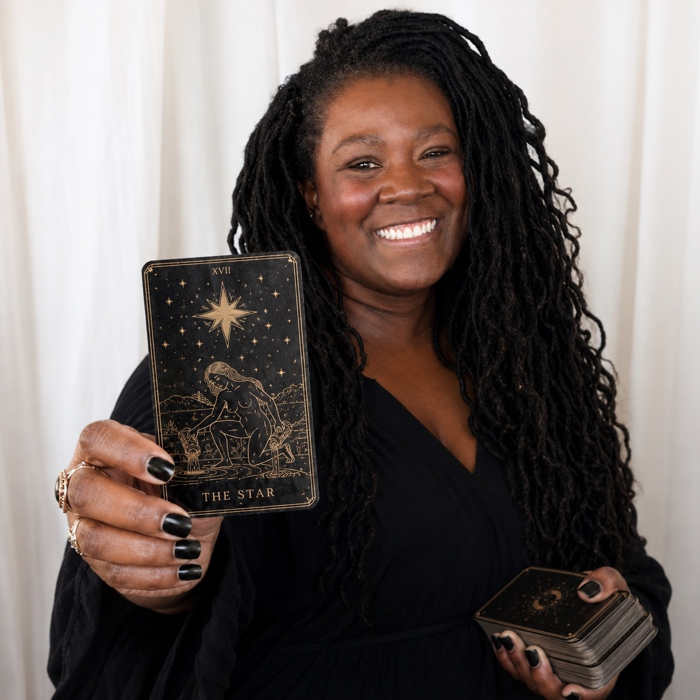

About The Midnight Draw
Meet the Reader
I’m Erin, the reader behind The Midnight Draw.
Born on the winter solstice, I have always been drawn to the in between moments. The shift from dark to light. Intuition before explanation. The feeling that there is often more happening beneath the surface than we immediately see.
What began as a personal practice grew into a way to create meaningful, memorable moments for other people. Today, I bring thoughtful tarot readings to private celebrations, seasonal gatherings, markets, special events, and brand activations throughout Los Angeles, Orange County, and Southern California.
What Sets The Midnight Draw Apart
Approachable
You do not need to know anything about tarot before sitting down for a reading.
Made for Events
Readings are designed to feel like part of the gathering rather than taking it over.
Reflective, Not Predictive
The cards offer perspective, not instructions. Your choices remain your own.
Personal & Conversational
Every guest gets an individual experience, even within a larger event.
Everyone Is Welcome
The Midnight Draw welcomes people of all faiths, genders, identities, preferences, and backgrounds. Every reading is held as a respectful, inclusive, and nonjudgmental space.
Designed for Gatherings
A reading at an event should feel like a small moment inside the larger evening. I pay attention to the full experience around the cards too: setup, pacing, guest flow, and how the reading space fits into the event itself.
The goal is always to create something that feels polished, comfortable, and connected to the gathering you are already creating.
Invite The Midnight Draw
Planning a gathering? I’d love to hear what you have in mind.